Regression Diagnostics
Source:vignettes/articles/regression-diagnostics.Rmd
regression-diagnostics.RmdOverview
After fitting a functional regression model, it is essential to check whether the assumptions hold, whether any observations unduly influence the fit, and whether the results are stable. The fdars package provides seven diagnostic tools adapted for FPC-based functional regression.
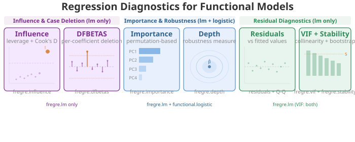
Supported Models
| Method | Function | fregre.lm |
functional.logistic |
|---|---|---|---|
| Influence (leverage, Cook’s D) | fregre.influence |
yes | |
| DFBETAS / DFFITS | fregre.dfbetas |
yes | |
| VIF | fregre.vif |
yes | yes |
| Permutation importance | fregre.importance |
yes | yes |
| Conditional importance | fregre.conditional.importance |
yes | yes |
| Regression depth | fregre.depth |
yes | yes |
| Explanation stability | fregre.stability |
model-free | model-free |
Why only fregre.lm and
functional.logistic? All diagnostic functions
operate on the FPC scores and regression coefficients produced by
fregre.lm() or functional.logistic(). Other
model types (fregre.pc, fregre.np,
fregre.basis) use different internal structures and are not
currently supported by the Rust diagnostics backend.
Why not nonparametric models? Nonparametric models
like fregre.np() (kernel regression) and KNN do not produce
coefficients or an explicit hat matrix, so leverage, Cook’s distance,
DFBETAS, VIF, and beta decomposition are undefined. Permutation
importance could in principle work for any model, but the current
implementation requires the FPC score representation from
fregre.lm.
Setup
Simulated Data
We simulate functional data with a known coefficient function. In applied terms, think of a manufacturing process where sensor curves predict a quality measure — diagnostics help identify faulty sensors (influential observations) and unstable model regions.
n <- 80
m <- 100
t_grid <- seq(0, 1, length.out = m)
beta_true <- 2 * dnorm(t_grid, 0.3, 0.08) - 1.5 * dnorm(t_grid, 0.7, 0.08)
beta_true <- beta_true / max(abs(beta_true))
X <- matrix(0, n, m)
for (i in 1:n) {
X[i, ] <- sin(2 * pi * t_grid) + 0.5 * rnorm(1) * cos(4 * pi * t_grid) +
rnorm(m, sd = 0.1)
}
dt <- t_grid[2] - t_grid[1]
y <- numeric(n)
for (i in 1:n) {
y[i] <- sum(beta_true * X[i, ]) * dt + rnorm(1, sd = 0.3)
}
fdataobj <- fdata(X, argvals = t_grid)
model <- fregre.lm(fdataobj, y, ncomp = 5)Influence and Case Deletion
These methods identify observations that disproportionately affect the fitted model. Removing a single influential observation can substantially change the coefficients, fitted values, and predictions.
Supported models: fregre.lm only. These
methods require the hat matrix, which is only defined for linear
models.
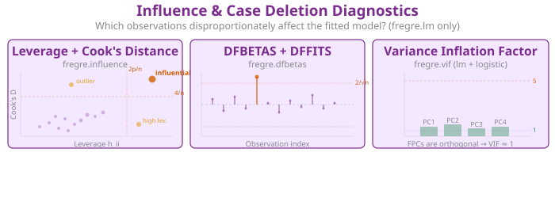
Leverage and Cook’s Distance
In plain English: Leverage measures how far an observation’s FPC scores are from the centre of the score space — think of it as “how unusual is this curve’s shape?” Cook’s distance combines leverage with residual size to measure the overall influence on the model. A point with high leverage and a large residual is influential: removing it would noticeably change the regression coefficients.
Mathematically: In the FPC regression , the hat matrix is
where is the augmented score matrix. The diagonal is the leverage of observation . Observations with are flagged as high-leverage.
Cook’s distance combines leverage and residual:
The classic threshold is . A high Cook’s means the observation pulls the fitted surface toward itself.
influence <- fregre.influence(model, data = fdataobj)
df_inf <- data.frame(
Observation = 1:n,
Leverage = influence$leverage,
CooksD = influence$cooks_distance
)
ggplot(df_inf, aes(x = .data$Leverage, y = .data$CooksD)) +
geom_point(color = "#7B2D8E", size = 2, alpha = 0.7) +
geom_text(data = subset(df_inf, CooksD > quantile(CooksD, 0.95)),
aes(label = .data$Observation), hjust = -0.3, size = 3,
color = "#D55E00") +
geom_hline(yintercept = 4 / n, linetype = "dashed",
color = "#D55E00", alpha = 0.5) +
annotate("text", x = max(df_inf$Leverage) * 0.9, y = 4 / n + 0.001,
label = "4/n threshold", color = "#D55E00", size = 3) +
labs(title = "Influence Diagnostics",
subtitle = "High leverage + high Cook's D = influential observations",
x = "Leverage (Hat value)", y = "Cook's Distance")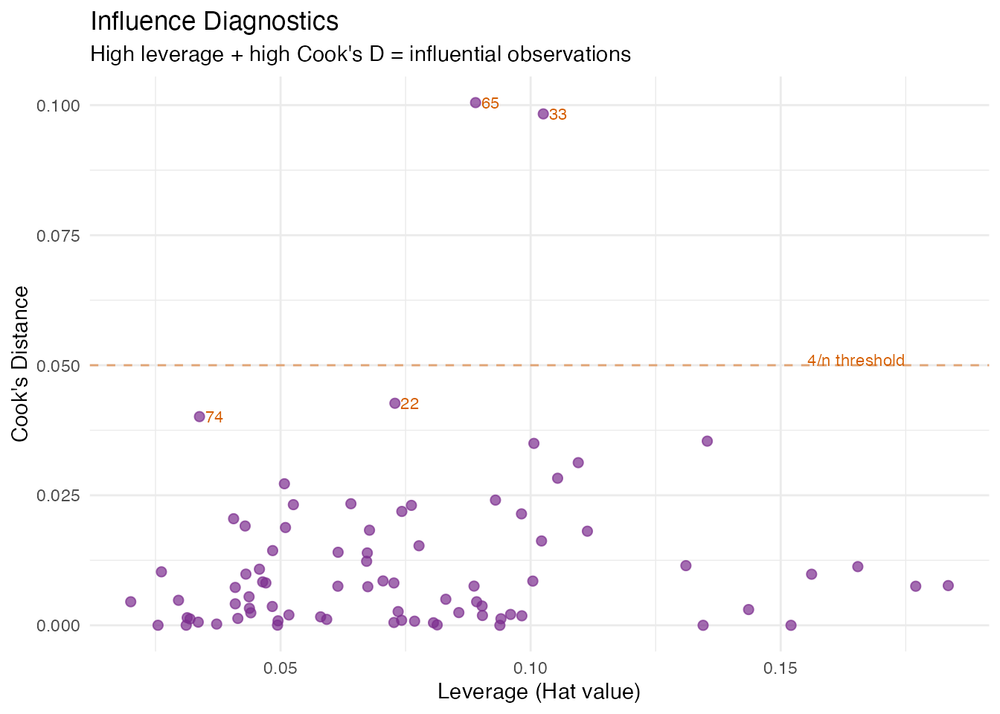
Leverage Distribution
Observations above the dashed threshold have FPC scores far from the centroid. In an industrial setting, these might be sensors operating under unusual conditions.
ggplot(df_inf, aes(x = .data$Observation, y = .data$Leverage)) +
geom_segment(aes(xend = .data$Observation, yend = 0), color = "gray70") +
geom_point(color = "#4A90D9", size = 2) +
geom_hline(yintercept = 2 * (model$ncomp + 1) / n, linetype = "dashed",
color = "#D55E00") +
labs(title = "Leverage per Observation",
subtitle = paste("Threshold: 2(K+1)/n =",
round(2 * (model$ncomp + 1) / n, 3)),
x = "Observation", y = "Leverage")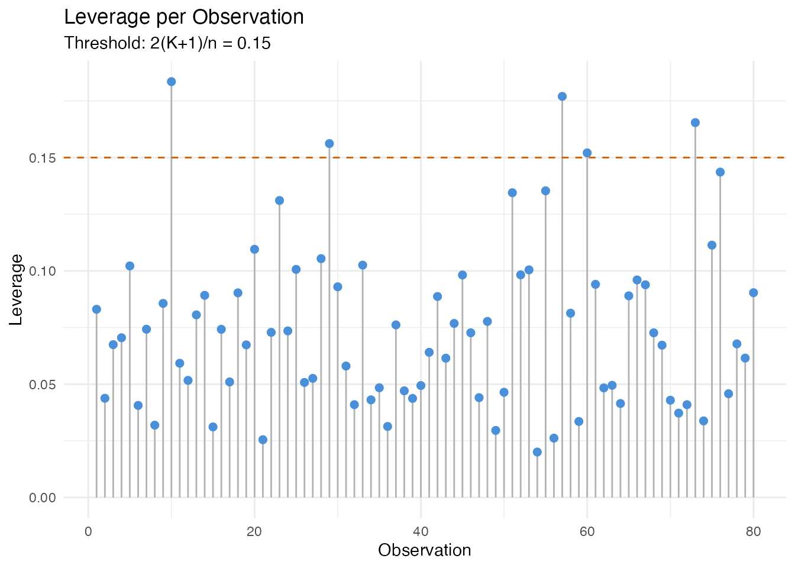
DFBETAS and DFFITS
In plain English: DFBETAS asks, for each observation and each regression coefficient: “how much would this coefficient change if I removed this observation?” DFFITS is similar but for the fitted value itself: “how much would observation ’s prediction change if I refitted without it?”
Large DFBETAS values for a specific component indicate that the observation is driving that component’s regression coefficient. This helps pinpoint which aspect of the model an influential point affects, not just that it matters.
Mathematically:
The standard cutoff for DFBETAS is ; for DFFITS it is .
dfb <- fregre.dfbetas(model, data = fdataobj)
cat("DFBETAS cutoff (2/sqrt(n)):", round(dfb$dfbetas_cutoff, 3), "\n")
#> DFBETAS cutoff (2/sqrt(n)): 0.224
cat("DFFITS cutoff:", round(dfb$dffits_cutoff, 3), "\n")
#> DFFITS cutoff: 0.548
df_dffits <- data.frame(
Observation = seq_len(n),
DFFITS = dfb$dffits
)
ggplot(df_dffits, aes(x = .data$Observation, y = abs(.data$DFFITS))) +
geom_segment(aes(xend = .data$Observation, yend = 0), color = "gray70") +
geom_point(color = "#7B2D8E", size = 2) +
geom_hline(yintercept = dfb$dffits_cutoff, linetype = "dashed",
color = "#D55E00") +
labs(title = "DFFITS: Case Influence on Fitted Values",
subtitle = paste("Cutoff:", round(dfb$dffits_cutoff, 3)),
x = "Observation", y = "|DFFITS|")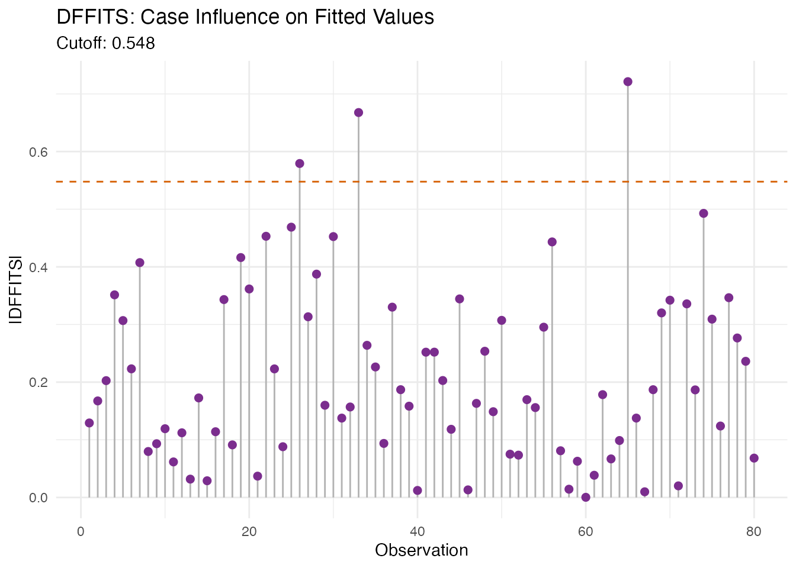
ncomp_show <- min(3, ncol(dfb$dfbetas))
df_dfb <- do.call(rbind, lapply(seq_len(ncomp_show), function(k) {
data.frame(Observation = seq_len(n),
DFBETAS = dfb$dfbetas[, k],
Component = paste0("PC", k))
}))
ggplot(df_dfb, aes(x = .data$Observation, y = .data$DFBETAS)) +
geom_point(color = "#4A90D9", size = 1.5, alpha = 0.6) +
geom_hline(yintercept = c(-dfb$dfbetas_cutoff, dfb$dfbetas_cutoff),
linetype = "dashed", color = "#D55E00") +
facet_wrap(~ Component) +
labs(title = "DFBETAS per FPC Component",
subtitle = "Per-coefficient case influence — points beyond cutoff shift that coefficient",
x = "Observation", y = "DFBETAS")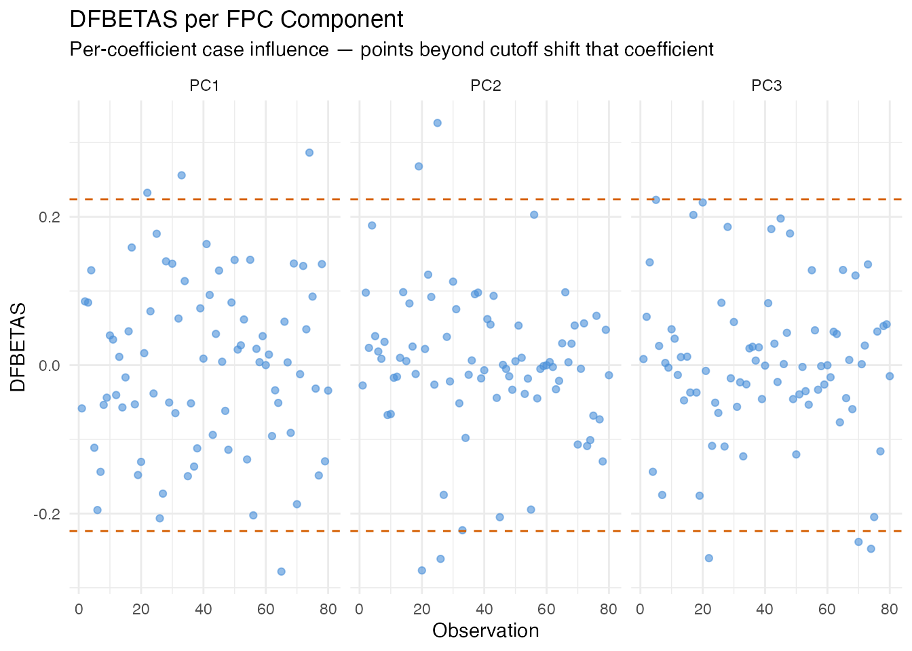
Variance Inflation Factor
In plain English: VIF checks whether the FPC scores are collinear with each other (or with scalar covariates). If two predictors carry the same information, the regression coefficients become unstable. Since FPC scores are orthogonal by construction, VIF should be near 1 for a pure FPCA model. VIF > 5 indicates a problem — typically when scalar covariates correlate with FPC scores or when the score matrix is numerically ill-conditioned.
Mathematically: The VIF for score is
where is the from regressing on all other predictors. VIF = 1 means no collinearity; VIF = 10 means 90% of the variance of is explained by other predictors.
Supported models: fregre.lm +
functional.logistic.
vif_scores <- fregre.vif(model, data = fdataobj)
df_vif <- data.frame(
Component = paste0("PC", seq_along(vif_scores$vif)),
VIF = vif_scores$vif
)
ggplot(df_vif, aes(x = .data$Component, y = .data$VIF)) +
geom_col(fill = "#7B2D8E", alpha = 0.7) +
geom_hline(yintercept = 5, linetype = "dashed", color = "#D55E00") +
annotate("text", x = length(vif_scores$vif), y = 5.3,
label = "VIF = 5 threshold", color = "#D55E00", hjust = 1, size = 3) +
labs(title = "Variance Inflation Factor",
subtitle = paste("Mean VIF:", round(vif_scores$mean_vif, 2),
"— values near 1 confirm orthogonal FPC scores"),
x = "Component", y = "VIF")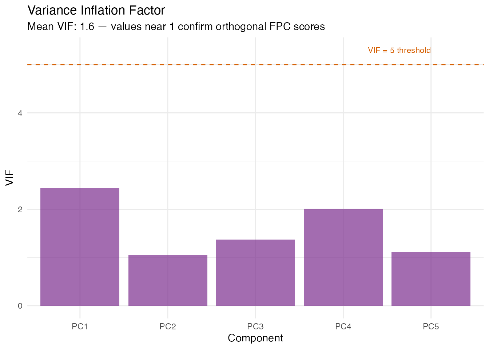
Residual Diagnostics
Standard regression diagnostics check the model assumptions visually.
These plots use only the fregre.lm model’s residuals and
fitted values.
Residuals vs Fitted
In plain English: If the model is well-specified, residuals should scatter randomly around zero with constant spread. Patterns (curves, funnels) indicate model misspecification: a curve means a nonlinear effect is missing; a funnel means heteroscedasticity (variance changes with the fitted value). Point size encodes leverage, so large distant points are the most concerning.
df_resid <- data.frame(
Fitted = model$fitted.values,
Residual = model$residuals,
Leverage = influence$leverage
)
ggplot(df_resid, aes(x = .data$Fitted, y = .data$Residual)) +
geom_point(aes(size = .data$Leverage), color = "#4A90D9", alpha = 0.6) +
geom_hline(yintercept = 0, linetype = "dashed") +
geom_smooth(method = "loess", se = FALSE, color = "#D55E00", linewidth = 0.8) +
scale_size_continuous(range = c(1, 5)) +
labs(title = "Residuals vs Fitted Values",
subtitle = "Point size = leverage; orange line = loess smoother (should be flat at zero)",
x = "Fitted Values", y = "Residuals")
#> `geom_smooth()` using formula = 'y ~ x'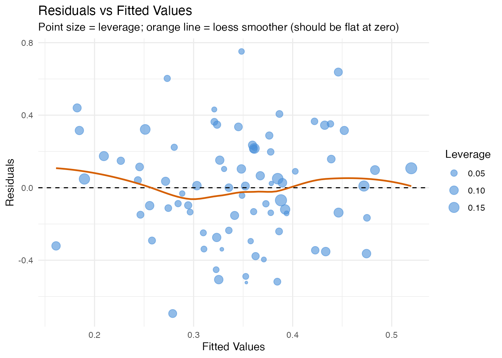
Normal Q-Q Plot
In plain English: If the errors are normally distributed, the points follow the diagonal line. Deviations at the tails indicate heavy tails (outliers) or skewness. Normality is assumed by prediction intervals (see the uncertainty quantification article) but not by conformal prediction.
df_qq <- data.frame(Residual = model$residuals)
ggplot(df_qq, aes(sample = .data$Residual)) +
stat_qq(color = "#4A90D9", size = 2, alpha = 0.7) +
stat_qq_line(color = "#D55E00") +
labs(title = "Normal Q-Q Plot of Residuals",
subtitle = "Points on the line = Gaussian residuals; tails off = heavy tails / skewness",
x = "Theoretical Quantiles", y = "Sample Quantiles")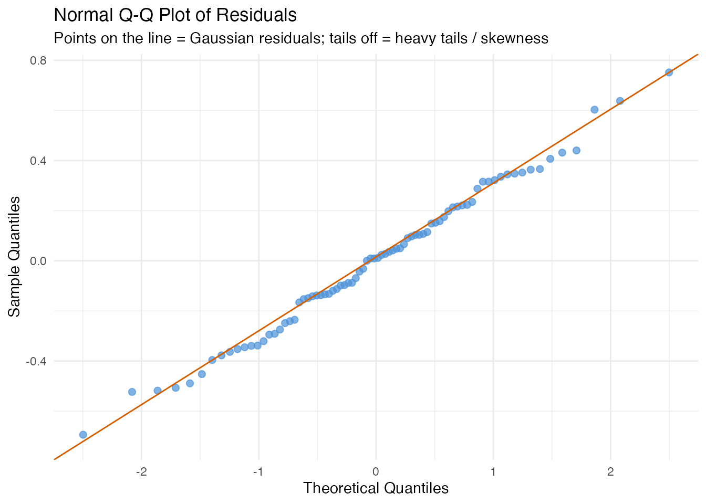
Scale-Location Plot
In plain English: This plot checks for heteroscedasticity from a different angle. The y-axis shows against fitted values. If the spread is constant, the smoother should be roughly flat.
df_sl <- data.frame(
Fitted = model$fitted.values,
SqrtAbsResid = sqrt(abs(model$residuals))
)
ggplot(df_sl, aes(x = .data$Fitted, y = .data$SqrtAbsResid)) +
geom_point(color = "#2E8B57", size = 2, alpha = 0.6) +
geom_smooth(method = "loess", se = FALSE, color = "#D55E00", linewidth = 0.8) +
labs(title = "Scale-Location Plot",
subtitle = "Flat smoother = constant variance (homoscedasticity)",
x = "Fitted Values", y = expression(sqrt("|Residual|")))
#> `geom_smooth()` using formula = 'y ~ x'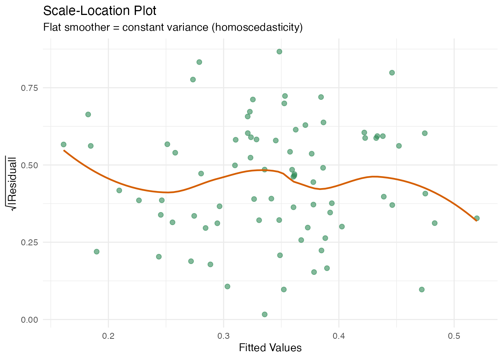
Importance and Robustness
These methods assess which FPC scores matter and how stable the model is.
Supported models: fregre.lm +
functional.logistic (except stability, which is
model-free).

Permutation Importance
In plain English: For each FPC score, we randomly shuffle its values (breaking the relationship with ) and measure how much the prediction error increases. A large increase means the model relies heavily on that score. This is a model-agnostic importance measure (works for any model that predicts from FPC scores).
Mathematically: The importance of score is
where is the -th random permutation of score and is the number of permutation replicates. The importance is always non-negative for a useful predictor.
imp <- fregre.importance(model, data = fdataobj, y = y, n.perm = 50, seed = 42)
df_imp <- data.frame(
Component = paste0("PC", seq_along(imp$importance)),
Importance = imp$importance
)
ggplot(df_imp, aes(x = reorder(.data$Component, -.data$Importance),
y = .data$Importance)) +
geom_col(fill = "#4A90D9", alpha = 0.7) +
labs(title = "Permutation Importance",
subtitle = paste("Baseline MSE:", round(imp$baseline_metric, 4),
"— bars show MSE increase when shuffling each score"),
x = "Component", y = "Importance (MSE increase)")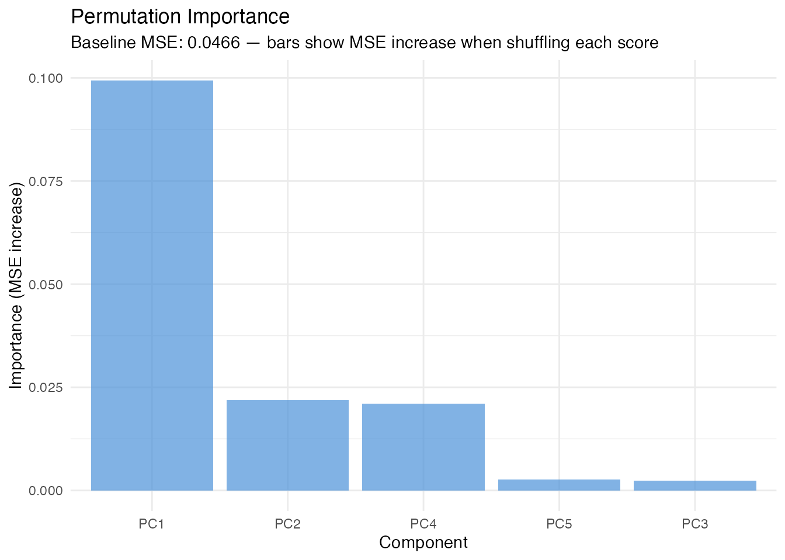
Conditional Permutation Importance
In plain English: Standard permutation importance can overstate a score’s importance when predictors are correlated, because shuffling one score implicitly breaks its correlation with other scores. Conditional permutation fixes this by shuffling within bins of the other predictors, preserving the correlation structure. The difference between unconditional and conditional importance reveals how much of a score’s apparent importance comes from correlation rather than direct prediction.
Mathematically: Instead of permuting freely, we partition the other scores into bins and permute only within observations that share the same bin. This keeps the conditional distribution approximately intact.
Since FPC scores are orthogonal by construction, conditional and unconditional importance should agree closely here. When scalar covariates are included, they may diverge.
cimp <- fregre.conditional.importance(model, data = fdataobj, y = y,
n.bins = 5, n.perm = 50, seed = 42)
df_cimp <- data.frame(
Component = paste0("PC", seq_along(cimp$importance)),
Conditional = cimp$importance,
Unconditional = cimp$unconditional_importance
)
df_cimp_long <- rbind(
data.frame(Component = df_cimp$Component, Value = df_cimp$Conditional,
Type = "Conditional"),
data.frame(Component = df_cimp$Component, Value = df_cimp$Unconditional,
Type = "Unconditional")
)
ggplot(df_cimp_long, aes(x = .data$Component, y = .data$Value,
fill = .data$Type)) +
geom_col(position = "dodge", alpha = 0.7) +
scale_fill_manual(values = c("Conditional" = "#4A90D9",
"Unconditional" = "#D55E00")) +
labs(title = "Conditional vs Unconditional Permutation Importance",
subtitle = "Similar values confirm FPC scores are orthogonal (no spurious importance)",
x = "Component", y = "Importance") +
theme(legend.position = "bottom")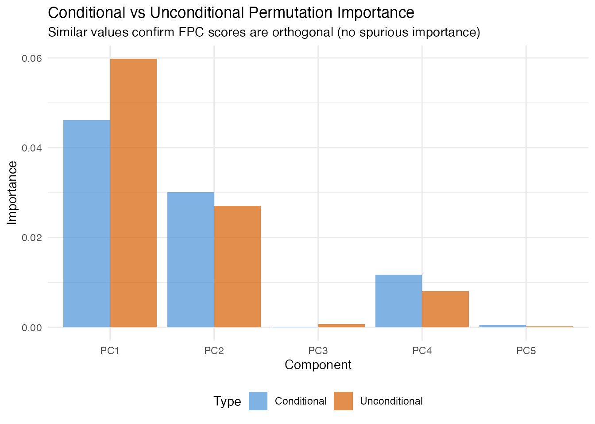
Regression Depth
In plain English: Regression depth measures how “central” the estimated coefficient vector is among bootstrap resamples. A high depth means the estimate sits near the middle of the bootstrap cloud — it is robust. A low depth means it is near the boundary, suggesting that a small data perturbation could substantially change the coefficients. This is particularly useful for detecting sensitivity to outliers.
Mathematically: Given bootstrap replicates , the regression depth of is the minimum fraction of bootstrap replicates that lie on one side of any hyperplane through . Depth ranges from 0 (boundary) to 0.5 (deepest possible).
The per-component score depths reveal which specific coefficients are most and least stable.
rdepth <- fregre.depth(model, data = fdataobj, y = y, n.boot = 50, seed = 42)
cat("Beta depth:", round(rdepth$beta_depth, 4), "\n")
#> Beta depth: 0.36
cat("Mean score depth:", round(rdepth$mean_score_depth, 4), "\n")
#> Mean score depth: 0.25
cat("Bootstrap replicates:", rdepth$n_boot_success, "\n")
#> Bootstrap replicates: 50
df_sdepth <- data.frame(
Component = paste0("PC", seq_along(rdepth$score_depths)),
Depth = rdepth$score_depths
)
ggplot(df_sdepth, aes(x = .data$Component, y = .data$Depth)) +
geom_col(fill = "#2E8B57", alpha = 0.7) +
labs(title = "Score-Level Regression Depth",
subtitle = "Higher = more robust; low depth = sensitive to data perturbations",
x = "Component", y = "Depth")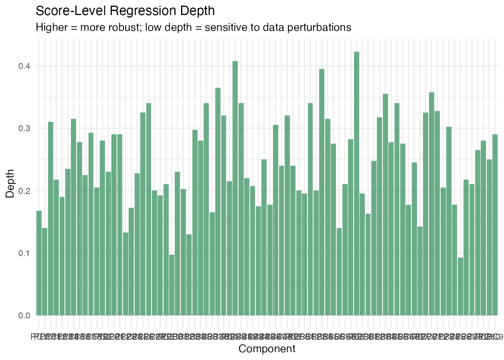
Explanation Stability
In plain English: Stability analysis asks: “if I collected a slightly different sample, how much would change?” It bootstraps the entire model-fitting process (FPCA + regression) and computes the coefficient of variation (CV) of at each domain point. Low CV means the coefficient is stable; high CV means it fluctuates across samples and should be interpreted cautiously.
Mathematically: For bootstrap resamples, the pointwise CV is
where is the bootstrap standard deviation and is a small constant to avoid division by zero near .
Model-free: This function takes data,
y, ncomp rather than a fitted model, because
it refits the model from scratch on each bootstrap sample.
stab <- fregre.stability(data = fdataobj, y = y, ncomp = 5,
n.boot = 50, seed = 42)
cat("Mean beta(t) CV:", round(mean(stab$beta_t_cv), 4), "\n")
#> Mean beta(t) CV: 16.2045
cat("Coefficient std devs:", round(stab$coefficient_std, 4), "\n")
#> Coefficient std devs: 0.0203 0.238 0.2284 0.2277 0.237
cat("Bootstrap successes:", stab$n_boot_success, "\n")
#> Bootstrap successes: 50
df_stab <- data.frame(t = t_grid, cv = stab$beta_t_cv)
ggplot(df_stab, aes(x = .data$t, y = .data$cv)) +
geom_line(color = "#C0392B", linewidth = 1) +
geom_ribbon(aes(ymin = 0, ymax = .data$cv), fill = "#C0392B", alpha = 0.1) +
labs(title = "Coefficient of Variation for beta(t)",
subtitle = "Lower = more stable; peaks indicate unreliable regions",
x = "t", y = "CV")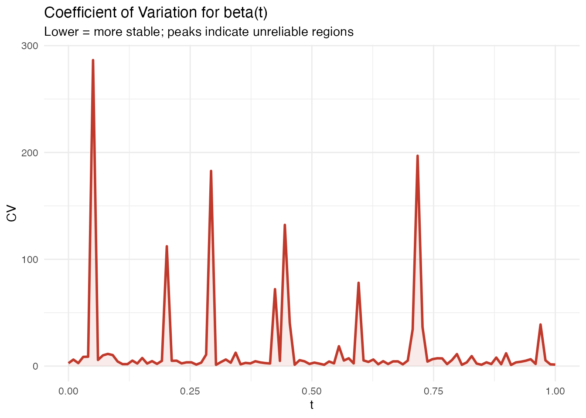
Summary
| Diagnostic | Question | Model | Key threshold |
|---|---|---|---|
| Leverage | How unusual is this curve’s shape? | lm | |
| Cook’s D | How much does removing this observation change the fit? | lm | |
| DFBETAS | Which coefficient does this observation affect? | lm | |
| DFFITS | How much does the fitted value change? | lm | |
| VIF | Are the FPC scores collinear? | lm, logistic | VIF > 5 |
| Permutation importance | Which scores drive predictions? | lm, logistic | Relative ranking |
| Conditional importance | Same, corrected for correlations | lm, logistic | Relative ranking |
| Regression depth | Is the coefficient estimate robust? | lm, logistic | Near 0.5 = robust |
| Stability CV | Does change across samples? | model-free | Low CV = stable |
References
Belsley, D.A., Kuh, E. and Welsch, R.E. (1980). Regression Diagnostics. Wiley.
Breiman, L. (2001). Random forests. Machine Learning, 45(1), 5–32.
Cook, R.D. (1977). Detection of influential observations in linear regression. Technometrics, 19(1), 15–18.
Kutner, M.H., Nachtsheim, C.J., Neter, J. and Li, W. (2004). Applied Linear Statistical Models. 5th ed. McGraw-Hill/Irwin.
Ramsay, J.O. and Silverman, B.W. (2005). Functional Data Analysis. 2nd ed. Springer.
Rousseeuw, P.J. and Hubert, M. (1999). Regression depth. Journal of the American Statistical Association, 94(446), 388–402.
Strobl, C., Boulesteix, A.-L., Kneib, T., Augustin, T. and Zeileis, A. (2008). Conditional variable importance for random forests. BMC Bioinformatics, 9, 307.
See Also
-
vignette("explainability")— global and local model explanations -
vignette("uncertainty-quantification")— prediction intervals, bootstrap CI -
vignette("articles/scalar-on-function")— scalar-on-function regression methods